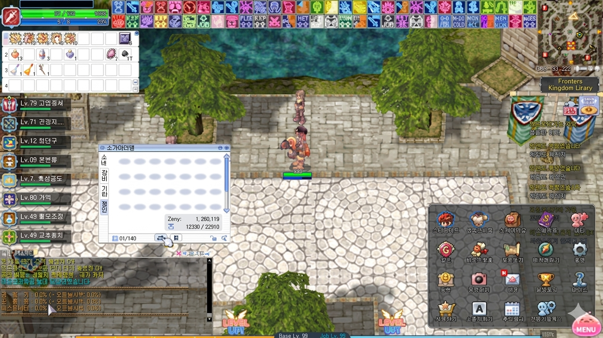

Game Basics
Stat-Effekte, Elementar-Tabelle und Waffen-vs-Größe-Modifikatoren — alles, was du für Build- und Schaden-Berechnungen brauchst. Plus: das in Zero integrierte MENU-Poring & Hint-System für Einsteiger.
🆕 Neueste UI-Revision (Stand 2026)
RO Zero hat das HUD ein weiteres Mal überarbeitet. Der Screenshot zeigt das aktuelle Layout in einer Stadt-Szene:

Was hat sich geändert?
📍 Oben links — Charakter-Hauptfenster
Neues, kompakteres Design für HP- und SP-Balken, Job-/Base-Level-Anzeige, Status-Effekt-Icons und Charakter-Portrait. Ersetzt die ältere reine Balken-Anzeige an derselben Stelle. Buffs/Debuffs werden jetzt direkt am Fenster gestapelt statt in einer separaten Leiste.
📍 Unten — EXP-Bar als Streifen
Der EXP-Balken liegt jetzt durchgehend am unteren Bildschirmrand — kein versteckter Balken mehr neben den Hotkey-Slots. Base-EXP und Job-EXP sind übereinander gestapelt sichtbar, sodass beide Progressionen auf einen Blick lesbar sind.
📍 Party-Menü neu gestaltet
Die Mitglieder-Liste ist klarer aufgebaut: Rolle (Leader / Member), HP-Bar pro Member und Quick-Buttons für Invite, Leader-Transfer und Leave direkt am Frame. Ersetzt die ältere reine Text-Liste, die nur den Member-Status anzeigte.
📌 RO-Zero-Besonderheiten
- RO Zero verwendet Pre-Renewal-Formeln (multiplikativer Card-Mod, Soft+Hard-DEF-Split, Pre-Renewal-MATK).
- Cast-Time ist vollständig variabel (kein Fixed-Cast-Anteil) — 150 DEX = instant.
- ASPD nutzt die Pre-Renewal-Waffen-Delay-Tabelle.
- HP/SP-Skalierung: JobBaseHP × (1 + VIT/100) bzw. JobBaseSP × (1 + INT/100) — multiplikativ, nicht additiv wie Renewal.
- Crit-Formel bleibt 1 + LUK/3; Verteidiger LUK/5 senkt Angreifer-Crit.
- Elementar-Matrix entspricht der Standard-Pre-Renewal-Lv1-Tabelle (Zero hat sie nicht modifiziert).
- Größen-Modifikatoren entsprechen Vanilla Pre-Renewal — Rebellion-Schusswaffen verwenden dasselbe Schema.
- Status-Resist-Werte nutzen lineare Pre-Renewal-Formeln — 100 % im Primär-Stat heißt Immunität.
📊 Stat-Effekte (Pre-Renewal)
Jeder Stat-Punkt hat eine direkte Wirkung — und alle 10 Punkte gibt es zusätzlich einen quadratischen Bonus (z.B. STR-ATK-Bonus = floor(STR/10)²). Die Tabelle zeigt sowohl den Pro-Punkt-Beitrag als auch die Pro-10-Schwelle.
| Effekt | Pro Punkt | Pro 10 (Bonus) | Anmerkung |
|---|---|---|---|
| ATK (Melee) | +1 pro Punkt | floor(STR/10)² Bonus alle 10 | |
| ATK (Ranged) | kein Beitrag | — | Ranged-Waffen nutzen DEX statt STR |
| Trage-Limit | +30 pro Punkt | — | Basis 20.000 + STR×30 |
| Effekt | Pro Punkt | Pro 10 (Bonus) | Anmerkung |
|---|---|---|---|
| FLEE | +1 pro Punkt | — | Basis FLEE = BaseLvl + AGI |
| ASPD | skaliert (Hauptbeitrag) | (AGI×4 + DEX)/4 — waffenabhängig | AGI dominanter Faktor |
| Stun-Resist | +0,1 % pro Punkt | +1 % pro 10 | Sekundär; primär VIT |
| Effekt | Pro Punkt | Pro 10 (Bonus) | Anmerkung |
|---|---|---|---|
| Max-HP | +1 % der Job-Basis-HP | — | MaxHP = JobBaseHP × (1 + VIT/100) |
| DEF (soft) | +1 pro Punkt | — | Reduziert Schaden flach |
| MDEF (soft) | +0,5 pro Punkt | +1 pro 2 | floor(VIT/2) |
| HP-Regen | skaliert | — | Tick = MaxHP/200 + VIT/5 |
| Status: Stun | +1 % pro Punkt | — | 100 VIT = immun |
| Status: Poison | +1 % pro Punkt | — | 100 VIT = immun |
| Status: Silence | +1 % pro Punkt | — | 100 VIT = immun |
| Status: Blind | +0,7 % pro Punkt | — | Kombiniert mit INT |
| Status: Bleeding | +1 % pro Punkt | — | |
| Heal-Effekt | +0,2 % erhalten | +2 % pro 10 | Auf empfangene Heilung |
| Effekt | Pro Punkt | Pro 10 (Bonus) | Anmerkung |
|---|---|---|---|
| MATK (Min) | +1 pro Punkt | floor(INT/7)² Bonus alle 10 | MATK_min = INT + floor(INT/7)² |
| MATK (Max) | +1 pro Punkt | floor(INT/5)² Bonus alle 10 | MATK_max = INT + floor(INT/5)² |
| Max-SP | +1 % der Basis-SP | — | MaxSP = JobBaseSP × (1 + INT/100) |
| SP-Regen | skaliert | +1 pro 6 | Tick = MaxSP/100 + INT/6 (+1 ab 120) |
| MDEF (hard) | +1 pro Punkt | — | % Reduktion Magie-Schaden |
| Status: Sleep | +1 % pro Punkt | — | 100 INT = immun |
| Status: Blind | +0,3 % pro Punkt | — | Kombiniert mit VIT |
| Status: Stone | +0,5 % pro Punkt | — |
| Effekt | Pro Punkt | Pro 10 (Bonus) | Anmerkung |
|---|---|---|---|
| ATK (Ranged) | +1 pro Punkt | floor(DEX/10)² Bonus alle 10 | Wie STR für Melee |
| ATK (Melee) | +0,2 pro Punkt | — | floor(DEX/5) zusätzlich |
| HIT | +1 pro Punkt | — | Basis HIT = BaseLvl + DEX |
| Variable Cast-Time | reduziert | — | VCT = Basis × (1 - DEX/150) — 150 DEX = instant |
| ASPD | minor | — | ~1/4 der Wirkung von AGI |
| Min-ATK (Waffe) | skaliert | — | Hebt Waffen-ATK-Floor |
| Effekt | Pro Punkt | Pro 10 (Bonus) | Anmerkung |
|---|---|---|---|
| Crit-Rate | +0,33 pro Punkt | +1 pro 3 | Crit = 1 + LUK/3 |
| ATK | +0,2 pro Punkt | +1 pro 5 | floor(LUK/5) |
| MATK | +0,33 pro Punkt | +1 pro 3 | floor(LUK/3) |
| HIT | +0,2 pro Punkt | +1 pro 5 | floor(LUK/5) |
| Perfect Dodge | +0,1 pro Punkt | +1 pro 10 | Lucky Dodge = 1 + LUK/10 |
| Status: Curse | +1 % pro Punkt | — | |
| Status: Poison | +0,25 % pro Punkt | — | |
| Crit-Resistenz | −0,2 pro LUK | — | Verteidiger LUK/5 senkt Angreifer-Crit |
🌪️ Elementar-Modifikator-Tabelle (Lv 1)
Schadens-Multiplikator beim Treffen eines Verteidigers eines bestimmten Elements mit einer Waffe/Skill eines anderen Elements. Reihen = Verteidiger, Spalten = Angreifer. 100 % = neutral, <100 = Resistenz, >100 = Schwäche, 0 = immun, negativ = heilt.
| Verteidiger ↓ / Angreifer → | Neutral | Water | Earth | Fire | Wind | Poison | Holy | Shadow | Ghost | Undead |
|---|---|---|---|---|---|---|---|---|---|---|
| Neutral | 100 | 100 | 100 | 100 | 100 | 100 | 100 | 100 | 25 | 100 |
| Water | 100 | 90 | 100 | 150 | 90 | 100 | 100 | 100 | 25 | 100 |
| Earth | 100 | 100 | 90 | 90 | 150 | 50 | 100 | 100 | 25 | 100 |
| Fire | 100 | 150 | 50 | 90 | 100 | 100 | 100 | 100 | 25 | 100 |
| Wind | 100 | 50 | 100 | 100 | 90 | 100 | 100 | 100 | 25 | 100 |
| Poison | 100 | 100 | 50 | 100 | 100 | 25 | 100 | 50 | 25 | 50 |
| Holy | 100 | 100 | 100 | 100 | 100 | 50 | 0 | 125 | 75 | 100 |
| Shadow | 100 | 100 | 100 | 100 | 100 | 50 | 125 | 0 | 75 | 100 |
| Ghost | 25 | 100 | 100 | 100 | 100 | 100 | 75 | 75 | 125 | 100 |
| Undead | 100 | 100 | 100 | 125 | 100 | 0 | 150 | -25 | 75 | 0 |
| Verteidiger ↓ / Angreifer → | Neutral | Water | Earth | Fire | Wind | Poison | Holy | Shadow | Ghost | Undead |
|---|---|---|---|---|---|---|---|---|---|---|
| Neutral | 100 | 100 | 100 | 100 | 100 | 100 | 100 | 100 | 0 | 100 |
| Water | 100 | 75 | 100 | 175 | 80 | 100 | 100 | 100 | 0 | 100 |
| Earth | 100 | 100 | 75 | 80 | 175 | 25 | 100 | 100 | 0 | 100 |
| Fire | 100 | 175 | 25 | 75 | 100 | 100 | 100 | 100 | 0 | 100 |
| Wind | 100 | 25 | 100 | 100 | 75 | 100 | 100 | 100 | 0 | 100 |
| Poison | 100 | 100 | 25 | 100 | 100 | 0 | 100 | 25 | 0 | 25 |
| Holy | 100 | 100 | 100 | 100 | 100 | 25 | 0 | 150 | 50 | 100 |
| Shadow | 100 | 100 | 100 | 100 | 100 | 25 | 150 | 0 | 50 | 100 |
| Ghost | 0 | 100 | 100 | 100 | 100 | 100 | 50 | 50 | 150 | 100 |
| Undead | 100 | 100 | 100 | 150 | 100 | 0 | 175 | -50 | 50 | 0 |
| Verteidiger ↓ / Angreifer → | Neutral | Water | Earth | Fire | Wind | Poison | Holy | Shadow | Ghost | Undead |
|---|---|---|---|---|---|---|---|---|---|---|
| Neutral | 100 | 100 | 100 | 100 | 100 | 100 | 100 | 100 | -25 | 100 |
| Water | 100 | 50 | 100 | 200 | 70 | 100 | 100 | 100 | -25 | 100 |
| Earth | 100 | 100 | 50 | 70 | 200 | 0 | 100 | 100 | -25 | 100 |
| Fire | 100 | 200 | 0 | 50 | 100 | 100 | 100 | 100 | -25 | 100 |
| Wind | 100 | 0 | 100 | 100 | 50 | 100 | 100 | 100 | -25 | 100 |
| Poison | 100 | 100 | 0 | 100 | 100 | -25 | 100 | 0 | -25 | 0 |
| Holy | 100 | 100 | 100 | 100 | 100 | 0 | -25 | 175 | 25 | 100 |
| Shadow | 100 | 100 | 100 | 100 | 100 | 0 | 175 | -25 | 25 | 100 |
| Ghost | -25 | 100 | 100 | 100 | 100 | 100 | 25 | 25 | 175 | 100 |
| Undead | 100 | 100 | 100 | 175 | 100 | -25 | 200 | -75 | 25 | -25 |
| Verteidiger ↓ / Angreifer → | Neutral | Water | Earth | Fire | Wind | Poison | Holy | Shadow | Ghost | Undead |
|---|---|---|---|---|---|---|---|---|---|---|
| Neutral | 100 | 100 | 100 | 100 | 100 | 100 | 100 | 100 | -50 | 100 |
| Water | 100 | 25 | 100 | 200 | 60 | 100 | 100 | 100 | -50 | 100 |
| Earth | 100 | 100 | 25 | 60 | 200 | -25 | 100 | 100 | -50 | 100 |
| Fire | 100 | 200 | -25 | 25 | 100 | 100 | 100 | 100 | -50 | 100 |
| Wind | 100 | -25 | 100 | 100 | 25 | 100 | 100 | 100 | -50 | 100 |
| Poison | 100 | 100 | -25 | 100 | 100 | -50 | 100 | -25 | -50 | -25 |
| Holy | 100 | 100 | 100 | 100 | 100 | -25 | -50 | 200 | 0 | 100 |
| Shadow | 100 | 100 | 100 | 100 | 100 | -25 | 200 | -50 | 0 | 100 |
| Ghost | -50 | 100 | 100 | 100 | 100 | 100 | 0 | 0 | 200 | 100 |
| Undead | 100 | 100 | 100 | 200 | 100 | -50 | 200 | -100 | 0 | -50 |
Wechsle zwischen den Tabs für die vier Defender-Element-Level. Lv 1 ist der Standard, Lv 4 das Maximum (z.B. „Fire-Lv-4-Defender" wie der Stormy Drake in Sunken Ship). Mit steigendem Level wird die Abweichung von 100 % verstärkt.
⚔️ Waffenklasse vs Monster-Größe
Pre-Renewal-Größenmodifikatoren — das Verhältnis von Waffen-ATK zu Monster-Größe (Small / Medium / Large). 100 % = voller Schaden, 75 % / 50 % = entsprechend reduziert.
| Waffenklasse | Small | Medium | Large |
|---|---|---|---|
| Bare Hand (Knuckle) | 100 % | 100 % | 100 % |
| Dagger | 100 % | 75 % | 50 % |
| One-Handed Sword | 75 % | 100 % | 75 % |
| Two-Handed Sword | 75 % | 75 % | 100 % |
| One-Handed Spear | 75 % | 100 % | 100 % |
| Two-Handed Spear | 50 % | 100 % | 100 % |
| One-Handed Axe | 50 % | 75 % | 100 % |
| Two-Handed Axe | 50 % | 75 % | 100 % |
| Mace | 75 % | 100 % | 100 % |
| Two-Handed Mace | 75 % | 100 % | 100 % |
| Bow | 100 % | 100 % | 75 % |
| Staff (1H / 2H) | 100 % | 100 % | 100 % |
| Book | 100 % | 100 % | 50 % |
| Whip | 75 % | 100 % | 75 % |
| Musical Instrument | 75 % | 100 % | 75 % |
| Katar | 75 % | 100 % | 75 % |
| Revolver | 100 % | 100 % | 75 % |
| Rifle | 75 % | 100 % | 100 % |
| Shotgun | 75 % | 100 % | 100 % |
| Gatling Gun | 100 % | 100 % | 75 % |
| Grenade Launcher | 75 % | 100 % | 100 % |
💡 Praxis-Tipps
- Pflicht für Einsteiger: Combat- und Items-Sektionen klären viele Zero-Besonderheiten, die klassische RO-Veteranen überraschen können.
- Auto-Attack: Strg-Halten beim Angriff aktiviert Auto-Attack auf das Ziel;
/noctrlmacht es permanent. - Daily-Tipp: Der erste Hint-Klick ist absichtlich randomisiert — gut als Mini-Info-Happen pro Login.
- MENU bleibt im Kampf erreichbar — kein Tutorial-Overlay, sondern jederzeit aufrufbar.